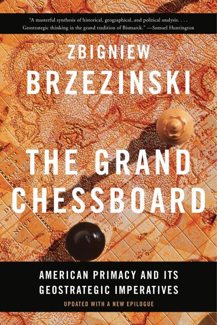
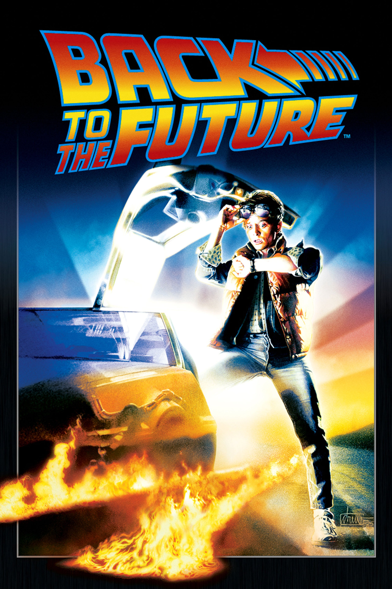
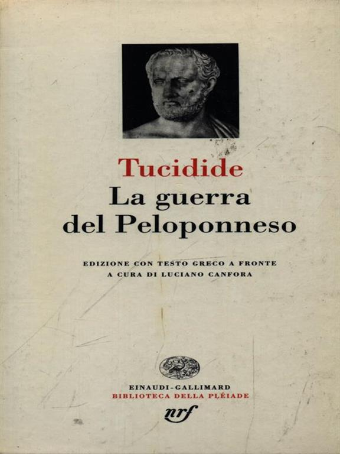

55:12 · 7 OPERE
Zbigniew Brzezinski: La grande scacchiera.
Il filo del discorso
La lettura critica di La grande scacchiera di Zbigniew Brzezinski è preparata da una poesia di Giuseppe Giusti sul primo congresso degli scienziati a Pisa nel 1839. Il sovrano satirico che preferisce sudditi ignoranti offre a Dr Divago un paragone con la comunicazione contemporanea. La domanda che unisce poesia e geopolitica è se il sapere favorisca il giudizio e la convivenza oppure diventi uno strumento per amministrare gli altri. Il relatore presenta Brzezinski come esponente di una razionalità rivolta al dominio; i numerosi insulti e riferimenti alla follia restano qualificazioni polemiche, senza valore di diagnosi. Una lunga premessa distingue scelta etica e comportamento determinato, richiamando Kant, Wittgenstein e Platone. Dr Divago teme che ridurre l’etica alla spiegazione dei comportamenti cancelli la libertà della persona. La sua interpretazione del Tractatus è discussa come tale: il limite delle proposizioni etiche non equivale semplicemente a negare la importanza dell’etica. Il tema della deumanizzazione prepara poi la contestazione del libro: assumere l’egemonia come dato originario rischierebbe, secondo il relatore, di trasformarla in un destino da riprodurre. Il commento si concentra sulla apertura del primo capitolo, sul confronto fra imperi e sulle mappe delle sfere di interesse. Dr Divago vi oppone la vita concreta delle persone alla rappresentazione dei territori come caselle di una strategia. Il passo sulla ragione seconda, letto da L’ultima dea d’Occidente, formula il suo criterio: un sapere che trasforma gli esseri umani da fini in mezzi può rendere accettabile la sopraffazione. Il libro di Brzezinski viene così interpretato come un manuale di egemonia, distinguendo la tesi del recensore dalla descrizione e dalle intenzioni dichiarate dell’autore. Il riferimento ai sistemi politici semi-indipendenti apre la discussione sulla autonomia italiana. La localizzazione del potere a Washington è contestata attraverso una ipotesi di potere transnazionale, mentre i casi Moro e Craxi sono proposti come esempi del costo di una politica indipendente. La scheda separa gli eventi documentati dai nessi causali ipotizzati: una successione temporale e una testimonianza di conflitto non dimostrano una regia delle successive vicende. La chiusa torna a Tucidide, letto come un ammonimento contro guerra, imperialismo e demagogia, e affida alla cultura il compito di riconoscere le ragioni che preparano il conflitto prima che esso diventi inevitabile.
I libri nel discorso

La grande scacchiera / The Grand Chessboard
Copertina: Copertina inglese ufficiale Basic Books, edizione rivista del 6 dicembre 2016 con nuovo epilogo, 256 pagine, ISBN 9780465094356. Prima edizione inglese 1997. La traduzione italiana di Mario Baccianini uscì da Longanesi nel 1998, Il Cammeo 331, ISBN 9788830414631: il catalogo bibliotecario indica 296 pagine, non le 404 della scheda Google Books. Non si trasferiscono la copertina o le pagine della edizione 2016 alla copia del relatore.
Immagine autentica dell’opera, controllata visivamente; l’edizione di riferimento non è attribuita al filmato.
Titolo e autore espliciti; apertura del capitolo1, mappe e passi sulla egemonia discussi nel video.
Passaggio 0:01 ↗ · Fonti e libro ↗
Per il primo Congresso dei Dotti tenuto in Pisa nel 1839
Copertina della raccolta Poesie, Longanesi 1982, dalla quale il relatore dichiara di leggere il componimento; non copertina autonoma della poesia.: Longanesi & C., 1982, I Tascabili del Bibliofilo 16, illustrazioni di Adolfo Matarelli; ISBN 9788830403482 associato dal catalogo LibroCo
Immagine autentica della raccolta illustrata Poesie, Longanesi 1982, con illustrazioni di Adolfo Matarelli. Il relatore dichiara di leggere il componimento da una raccolta Longanesi 1982; non sono stati confrontati l’indice del suo esemplare né il suo ISBN. La copertina qui riprodotta è quella della raccolta catalogata da LibroCo, non una pubblicazione autonoma del componimento. ISBN e data 1982 riguardano soltanto questa edizione della raccolta.
Nel passaggio: 20.35–88.90 s: Giuseppe Giusti, raccolta Longanesi 1982 e titolo Per il primo Congresso dei Dotti espliciti; Nel passaggio: 182.26–334.34 s: lettura di strofe collazionate con il testo primario 1852, pp. 64–65. L’identificazione si basa sulla trascrizione automatica e richiede conferma.
Passaggio 1:17 ↗ · Fonti e libro ↗
Tractatus logico-philosophicus
Copertina del volume che comprende il Tractatus: Einaudi · Tractatus logico-philosophicus e Quaderni 1914–1916 · 2009
Copertina del volume Einaudi che comprende sia il Tractatus sia i Quaderni 1914–1916. La voce identifica il Tractatus; l’ISBN appartiene al volume contenitore e l’edizione non è accertata nel filmato.
Tractatus e conclusione sul tacere sono espliciti; lettura del relatore distinta da una collazione completa dell’opera.
Passaggio 14:29 ↗ · Fonti e libro ↗
L’ultima dea d’Occidente. Saggio sulla razionalità inesorabile
Foto parziale del volume mostrato a 2054 s; edizione non determinata: Fotogramma nativo intero del volume mostrato nel filmato Zbigniew Brzezinski: La grande scacchiera, a 2054 secondi. Titolo L’ultima dea d’Occidente e autore Dr Divago leggibili sulla coperta; mani nella parte inferiore e bordo inferiore del volume fuori dall’inquadratura. Fotografia parziale del libro nel suo contesto, non una copertina editoriale autonoma, frontespizio o ricostruzione. Sottotitolo, anno, editore e ISBN non leggibili; specifica edizione non determinata.
Il titolo esteso Saggio sulla razionalità inesorabile e il 2018 provengono dalla bibliografia aggiornata dell’autore, non da questo fotogramma o da colophon.
Titolo breve esplicito nel richiamo al proprio testo a 2023.47–2029.71 s e ripetuto a 2053.57–2058.60 s. Segue estratto sulla ragione seconda che trasforma l’essere umano da fine in mezzo, fino al richiamo alla giustificazione eseguivo gli ordini, 2097.32 s. Sottotitolo/2018 non pronunciati nel passo.
Passaggio 33:43 ↗ · Fonti e libro ↗
Quaderni del carcere
Copertina: Einaudi, ET Biblioteca, 18 luglio 2014, ISBN 9788806223441, edizione critica dell’Istituto Gramsci a cura di Valentino Gerratana, in quattro volumi con apparato. Copertina grigio-azzurra con ritratto di Gramsci; la scheda commerciale indica 3480 pagine, mentre alcune descrizioni catalografiche computano separatamente preliminari e testo. Edizione critica originaria 1975; i quaderni furono scritti nel 1929–1935. La variante commerciale Quaderni dal carcere non è registrata come seconda opera.
Copertina intera dell’edizione in quattro volumi, non una fotografia dei manoscritti o dei quattro dorsi. Il riferimento del video è al testo Q15§5, non all’intera edizione letta integralmente dal redattore.
Gramsci e i Quaderni, con richiamo esplicito al quaderno13; non una opera inventata dal solo nome egemonia.
Passaggio 47:32 ↗ · Fonti e libro ↗
Ritorno al futuro / Back to the Future
Poster ufficiale Universal · Back to the Future, 1985: Universal, 1985, regia di Robert Zemeckis, 116 minuti. Poster digitale originale del primo film dalla pagina ufficiale Universal; non fotogramma della singola scena citata e non confezione della trilogia.
Materiale promozionale del primo film; la versione digitale dell’immagine non data la sua prima pubblicazione e non è la scena di dialogo ricordata.
Titolo e scena del primo film con Marty e Doc Brown espliciti; dettagli della battuta ricordati in modo impreciso.
Passaggio 50:00 ↗ · Fonti e libro ↗
La guerra del Peloponneso
Copertina: Einaudi-Gallimard · Biblioteca della Pléiade · 1997
Copertina autentica controllata visivamente. Edizione di riferimento, non identificata come quella usata nel video.
Tucidide e La guerra del Peloponneso nominati nella chiusa come lettura da contrapporre alla mentalità imperialistica.
Passaggio 53:34 ↗ · Fonti e libro ↗